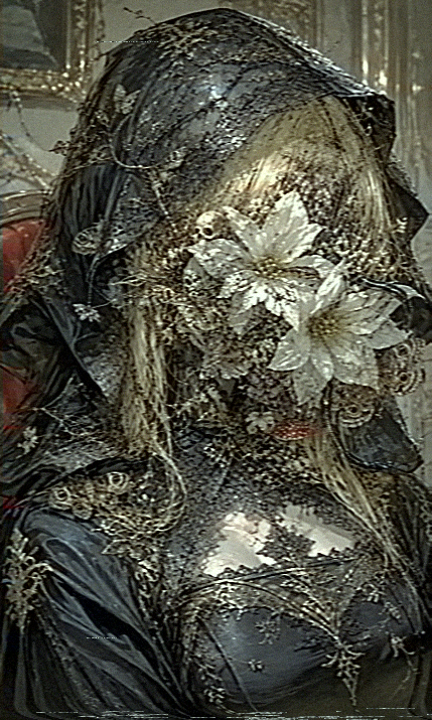

資料番号：DVL-01507 顔面より死を連想させる自然物が発生している状態の記録。幻覚等ではなく実際の 現象であることが確認されている。なお、対象には認識阻害の特殊な術式が 施されているため、当該記録も含め画質は総じて不良である。
対象は背面を大きく開いた黒色の喪服様の衣装を常時着用。また、顔面部より白色の花・ 黒色の枯死した花・毒性を有するキノコ類・ムカデ・蛇・蛾・骸骨等、死を連想させる 自然物が継続的に発生する事象が確認されている。当該事象は幻覚の類ではなく、実際に 発生している物理現象であると記録される。この影響により、対象は視覚機能を喪失 している。嗅覚及び聴覚は限定的に機能しているが、口部に相当する器官が存在しない ため、経口による栄養摂取は不可能と判断される。表向きに常用している仮面「シン・ バインド」は、この素顔を公的記録から秘匿する目的も兼ねている。
対象はアルプス地下世界の中層エリア、ツェントラルプラッツの出身である。両親は いずれも同地で採掘を生業とするハンターであった。
父親は、アルプス・ユグドラシルエネミーが遺した残骸の枝によって傷を負い、以降緩やかに 樹木エネミー化が進行していたとされる。両親はこの進行に気付かぬまま対象を妊娠・出産して おり、結果として対象は『エネミー化しかけの樹木人間』と『人間』のハーフとして生を受けた。
出産後、父親は完全にエネミー化して失踪。母親は異形の子を産んだことにより精神に異常を きたし、自ら命を絶っている。なお、母親の死については、生まれたばかりの対象自身の異能が 引き金になったとする説も存在する。
対象が使役する契約悪魔に関する記録。